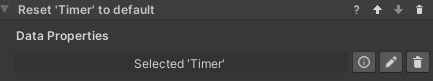
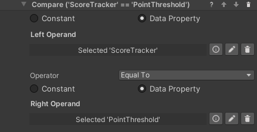
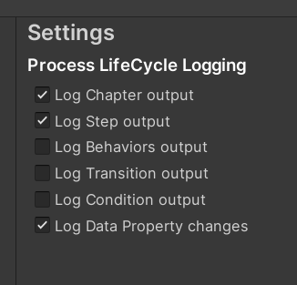

Working with Data Properties
There are some standard tools to work with data properties. These are the Set/Reset Value behaviors, which are used to change the value stored in a data property, and the Compare Values conditions, which compare two values (from data properties or constant) to check if they are fulfilled.
Set Value Behaviors
These behaviors set the value of a data property to a value specified in the step inspector. There is one behavior for each data property type. The available behaviors are listed here.
- Set Number
- Set Boolean
- Set Text
- Set State

Reset Value Behavior
This behavior resets a data property's value to its default. This is zero for numerical values, false for booleans and an empty string for text, but a different default can be specified in the inspector of the data property. The property needs to be referenced in the step inspector, and will reset when the behavior is triggered.

Compare Values Conditions
In States and Data it is possible to use a Compare Numbers, Compare Text or Compare Booleans condition. They work in a similar way, but the comparison operators differ. You'll need to select two values and the operation between them. Use the radio buttons to select if a value comes from a data property or is a constant entered in the step inspector. In the example below, the condition will be fulfilled when the Score Tracker value is equal or greater than the Point Threshold value.

Utilities
Some data properties can have utility functions to make them handier to use with Unity events. At the moment the following utility functions are available:
- Number Data Property: You can use the
IncreaseValue(float)function to increase or decrease the value of the data property. - Boolean Data Property: you can use the
InvertValue()function to switch it from true to false, or viceversa.
Logging Data Properties
It can be useful to log value changes to data properties in the console for debugging purposes. This can be enabled globally by ticking the relevant box in Project Settings -> VR Builder -> Settings.

If the Log Data Property changes checkbox is enabled, changes to the value of the data property will be logged in the console like the following example. Note that the name provided is the game object's name.